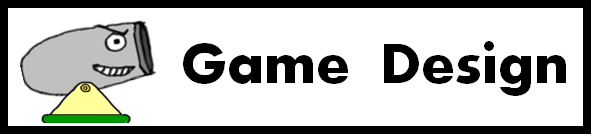

BeomGeun Choi - Test Manager
Map Editor
- ObjectManager
- Applying All Physics to the Objects
- Gravity Zone
- Art Assets
- Splash Image
SeongHyeon Hong - Tech Director
Physics
- Collision
- Reflection
- Trajectory
- Shooting cannon
- Adapting physics to game objects
HyunJun Yoo - Producer
FMOD
- Level Selection
- Option
- Menus
- Scheduling
- Button Action
HyeonMin Kim - Lead Designer
HUD
- Making Levels

Out & In
Game genre :2D puzzle projectile
- Used Engine : Warp Engine
- Language : C++, C
- Platform : Windows
- Milestone : Beta
High Concept
“It is a 2d puzzle projectile game where player has to shoot a ball in certain angle to reach a goal.
Detail of concept
Out & In is game where player has to place a ball in certain area to clear one level. In order to this, player has to adjust angle and power of cannon by using arrow keyboards and space bar. .
Player has a limited life in each level. Player can get higher grade as he or she gets stars. However, there are obstacles to take care of, so player has to think before he makes a move..
Game Flow
Splash Screens
When the game is started, short splash screens of the Digipen logo , FMOD logo and team DizzyPen will be displayed before the main menu..
Option
The option page will show users whether they can set screen as full screen or as window screen. Also, player is able to reset level data so that player can play it from the start. .
Menu
There will be several menus displayed on the screen. First menu will be described as play game and second one will be credits and last one will be the quit button..
Game Screen
When game is started, the position of cannons will be assigned on each level. However, the angle and power of the cannon will be determined by player using arrow keyboard and space bar. In each level, there are several obstacles to handle so that players will have hard time to clear the level. Player has to place the main ball to final place to win the level. .
Game mechanics
Physics
The main physics for this game is focused on gravity, collision and reflection. The gravity will help game play by making objects to work like real life. The gravity will be applied on cannon balls and several obstacles. If there is no gravity, the game will not be fun because it is not realistic and the ball will go straight without deflection. The collision is core mechanic where it helps players to solve more complex levels. For example, there are yellow and red balls, player has to shoot yellow one and make red one to get in red finishing zone. Then the player has to hit red ball with yellow one. In this case the collision and reflection play pivotally. As mentioned before, the collision will be applied on same objects same as gravity. The reflection also plays an important role in this game. When a ball is fall on a ground, the ball must be reflected. Also, the ball should be reflected if it is projected on a wall with power. .
Key control
The basic control is to use arrow keys to adjust angle of cannon that shoots a ball. The angle is able to rotate around 360 degrees without contacting with an obstacle(ex. ground that attached to it). After the player decided an angle, power will be determined by pressing space bar. If the ball need to go higher than a wall, then player must press the spacebar for a long time so that force of the ball will be enough to go beyond the wall. .
How to win
Winning condition is very simple. It is to place the ball on targeted area. However, the high levels are hard to clear, because many obstacles are existed. Moreover, the player use various items. .
How to lose
There is one way to lose the game. Player will be assigned certain number of lives, and if player cannot finish the level with given life, the player loses the game. On an easy level, there will be small amount of lives and vice versa on hard level. The life will be reduced by one as player shoot a ball and the game will be lost as player uses all life. .
Score system
Players will be given lives in each level. If player has a lot of spare lives then, player is able to get high score. If it is possible, we will add missions on each level so that player can get high score and make them feel more achieved as they fulfill the mission. For example, player has to get three stars in a limited time. .
Game design
Levels
Each level has different objects such as spines, moving walls, gravity zones, stars and breakable walls. On easy levels, player will not experience any interfered by objects because easy levels are supposed to teach players how to play the game and make them getting used to the game. .
Life
Life is only limited to certain numbers, if cannonball goes outside of the map, then player loses his life automatically and cannonball gets reloaded right away, so the player will not have to hesitate to play. .
HUD
In Hud, it needs to display angle of the cannon right next to the cannon so that player is able to know the angle. There should be another Hud where it displays power(force) of the cannon ball as player press space bar. Lastly, there should be a Hud to display lives and scores on the edge of the screen. .
Sound
The sound should be played when cannon ball is projected, bounced, disappeared. Other than that, there should be sound when player chooses menu and when stage is cleared to next stage. The game will utilize Digipen Asset Sound that is provided for Digipen students. .

Development Team
HyunJun, BeomGeun and SeongHyun have lived in dormitory until previous semester. Living together, we shared our knowledge and friendship. We decided to work together while we were having lunch together at sushi restaurant. We talked individual’s exceeding skills and abilities and decided to work as a team. To elaborate individual’s abilities: HyunJun is good at leading the team and he has a good writing skill so he took part in this project as a producer. Beomgeun is exceptional at observing and analyzing so he took role as a test manager. SeongHyun who is good at math and physics took role of a technical director because he can manage physics part better than other members can. Finally, HyeonMin who is very creative and can make very motivational environment team took role of a lead designer. .
Tools
Audacity was used to shorten the length of audio files. The site http://audio.online-convert.com was used to optimize the size for audio file. .
We used paint.net, power point and paint to print some graphic material such as User Interface, characters. Visual Studio and Warp Engine were used as coding, making the actual game.
What Went Right
1.Communication
Through communication of sharing game designs and concepts, we decided to make 2D projectile game like AngryBird. Many other ideas were discarded because of our abilities of making the game were not sure. We wanted to make sure that we could make game that we designed. At the beginning of the project, we had communication problems. One member was busy with his own personal problems. We were supposed to talk and communicate more often so that the team could have found the problems much earlier. It was hard to assign roles to members because we did not know where he was. However, after we had communications, the team understood his situation much better and team members were able to talk each other and assign roles to each other. After, the problem was solved, we communicated with each other more often than usual. We often discussed what was going right and wrong, decide whether we are going to keep the baby (ideas) or not, and how we can design the whole game for the future. We believe that the team had more discussions than other teams, so our teammates can get feedbacks from each other immediately and faster. .
2. Plans and Schedules
Since not all team members are experienced with projects and codes, we were not sure what we have to plan for the project. So, we had to make all potential possibilities that the team can make for the project and we eliminated what we cannot do. With the help of documents that we made, the team were able to look what we have planned and predicted what we could do together for the project. The more team focused on project, we got better coding and fixing bugs as well. .
3.Simplicity
Since the game design is very simple, when main game mechanism was implemented, speed of developing game was rapidly increased. All features that we needed were collision, reflection and physics between cannonball and walls. Once, basic features were completed, making levels and adding other objects are all we needed. Also, the map editor was made earlier than what we planned, making game levels and objects became very easy. Through open playtest, we were able to delete features that were too complicated for users. We made it very easy for players to understand so that players will not have hard time understanding the concept of ‘Out and In’. .4.Better understanding of game development
In CS230 course, we learned how game engine works and states are managed. At the beginning, we did not understand fully why we need to learn them, however as we were actually developing the game, we had better understanding of how game was constructed and how important CS230 materials were. It was hard to notice bugs and know how to fix them. However, as time goes by, ability to debug and find bugs was rapidly increased; we could tell we were improving. .
5. PlayTesting
The content of game was able to convey in a short amount of time. Through open playtest, the team was able to get many feedbacks from play testers. The information from the playtest was so valuable and this was a big help of our game. We changed features that were mentioned from playtest survey such as a graphical issue and physics problems. .What went Wrong
1. Lack of foreseeing the project
, This was the first time that we actually made the whole game project. Last semester, the team was only making prototypes of games. The whole team followed the release plan so that process of developing game will not go off from what we planned. Since the game was developed faster than we expected, the team members were very motivated to develop game at the first. However, as time goes by, motivation for developing game was slightly decreased after everything was implemented. Before the team submitted the final project, we had problems with file IO. We had to set up directories of reading and writing text files from project. We did not know until the last minute. If the team have thought about this more deeply and fundamentally, we probably have been able to notice this problem right away. .2. Lack of coding skills
Our team did not have excellent programmers, so we started with hard coding. When we started, the format and how we coded were quite messy. Moreover, it was hard to understand other member’s codes and keep up with them. Using comments, file headers, and function headers were not implemented through development, so other all team members had to count on each team members. Also, in CS170 class, we learned concept of c++: inheritance and STL. We believe that it would have been much easier if we have utilized STL and inheritance to have better control objects that we created. We were afraid to change codes because once it was established; it was very scared to change it. .3.Lack of Art Asset
Since team did not have design artists, we had lack of art assets for the game. Even we tried to make better art assets; they were comparatively looked lower than other team’s. We mainly made images by using paint.net, the quality of images were not very high and resolution of images were low. So, when images were enlarged, it often got teared and sheared.
4. Communication
Even though we had a good communication at first, because of busy individual schedules, we sometime had a hard time with the communication between team members. We hesitated to point out the flaw that each member has. It caused our game slow progress.
5. Time management
The schedule and plan for developing games were not specifically and evenly divided to team members. Since we are thriving to become professionals in gaming industry, this was the most important lesson that we learned through this project.
Even though we had good plans at the beginning, the team got quite loose at the end because all features were completed. We believe that if team members were more punctual for project, that we might have made more features and polished better for the project.
Making installer for our game was different from others because we had to read and write text files for the game. We had to assign location for levels and saved data.
How we managed to solve problems
There were many problems how we can code our project, with the help of TAs, we were able to solve problems that we faced such as developing physics, collision, file io and so on. Also, they gave us useful tips for coding and how to enhance our coding skills. It was very helpful.
In aspects of the communicating problem, we tried to meet each other and make a regular meeting so that team can make schedules for the future. Frequent contacts and regular meetings have definitely contributed to game development.
Future
We believe that there are many lessons that we learned from this project. Communicating is very important among team members to check status of game development. Being brave enough to delete whole code and start all over again for improving quality of codes. With the experience that we learned from this project, hopefully each individual overcome their mistakes and become more professional in the future.